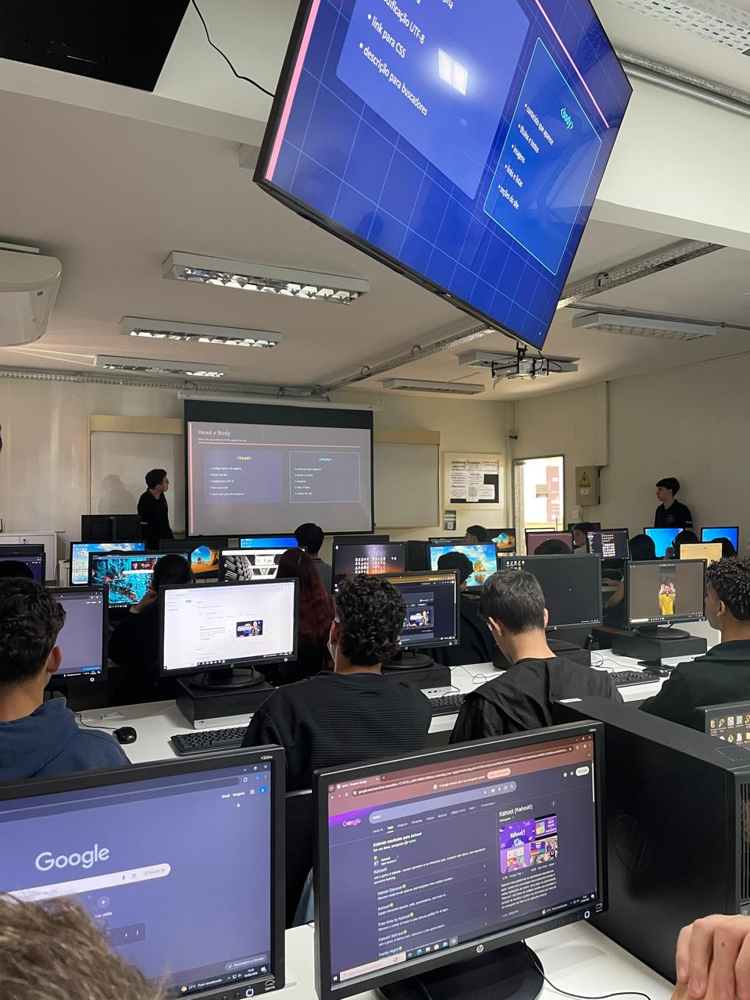

Relatório – 6ª Aula
Data: 16/06/2026
Turma: A
Instrutor:Victor
Revisão de HTML e Kahoot
Na aula do dia 16 de junho, o instrutor Victor repassou os conceitos de HTML e estruturação semântica ensinados nas aulas passadas. Com o objetivo de reforçar os aprendizados, o instrutor foi perguntando para os alunos sobre as tags e elementos vistos anteriormente. Durante a revisão, deu para notar que eles estavam assimilando bem o conteúdo novo e lembrando do que já tinha sido passado.
No geral, tivemos uma aula muito boa e bem tranquila, já que serviu para fixar bem a matéria. E por fim, finalizamos a aula com um Kahoot sobre o tema, que também contou com algumas perguntas de matérias passadas como a diferença de internet e web.
